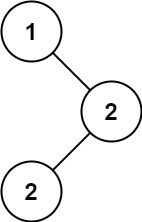

501. 二叉搜索树中的众数
中序遍历一遍：BST 中序值有序、相同值连续出现，数当前值的连续个数，频次超过历史最大就清空众数表，并列就追加。
思路
- 中序遍历 BST 得到升序序列，众数统计退化成「数连续相同值」，不用哈希表。
- 维护
curVal/curCnt（当前值及其连续个数）、maxCnt（历史最大频次）、modes（众数列表）。 curCnt > maxCnt：说明发现更高频的值，modes里旧的全不对，清空后从当前值重新开始记。curCnt == maxCnt：与最大并列，当前值进列表；一遍下来列表里就是全部众数，无需第二次扫描。
图解
最优解
1import java.util.*;2 3class Solution {4 private int curVal, curCnt, maxCnt;5 private final List<Integer> modes = new ArrayList<>();6 7 public int[] findMode(TreeNode root) {8 dfs(root);9 int[] out = new int[modes.size()];10 for (int i = 0; i < out.length; i++) out[i] = modes.get(i);11 return out;12 }13 14 // 中序遍历：BST 的中序值有序，相同的值一定连续出现15 private void dfs(TreeNode node) {16 if (node == null) return;17 dfs(node.left);18 if (node.val == curVal) curCnt++; else { curVal = node.val; curCnt = 1; }19 if (curCnt > maxCnt) { maxCnt = curCnt; modes.clear(); } // 冒出更高频：清空重来20 if (curCnt == maxCnt) modes.add(node.val);21 dfs(node.right);22 }23}题目
给你一个含重复值的二叉搜索树（BST）的根节点 root ，找出并返回 BST 中的所有 众数（即，出现频率最高的元素）。
如果树中有不止一个众数，可以按 任意顺序 返回。
假定 BST 满足如下定义：
- 结点左子树中所含节点的值 小于等于 当前节点的值
- 结点右子树中所含节点的值 大于等于 当前节点的值
- 左子树和右子树都是二叉搜索树
示例 1：

输入：root = [1,null,2,2] 输出：[2]
示例 2：
输入：root = [0] 输出：[0]
提示：
- 树中节点的数目在范围
[1, 104]内 -105 <= Node.val <= 105
进阶：你可以不使用额外的空间吗？（假设由递归产生的隐式调用栈的开销不被计算在内）
题面取自力扣当前版本。
数据快照 2026-11-04。题面版权归力扣所有，本站点仅供本人学习使用，请勿对外发布。